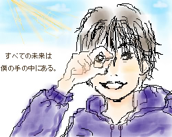

August.2002
ゆいさんの所の掲示板に描かせて頂きました。
その時、ゆいさんが試験勉強中ということだったので、
受験の頃の自分を思い出し、その時好きだったマンガのセリフを使ってみました。
『今は先が見えなくて不安かもしれないけど、自分の未来は自分で動かす事ができる』
誰に言わせよう？ともあんまり思わず自然に山ちゃんに言わせてました。
この絵はテーマとは関係なく描いちゃったんですが、絵的に青系ってことでいいでしょうか…(笑)？